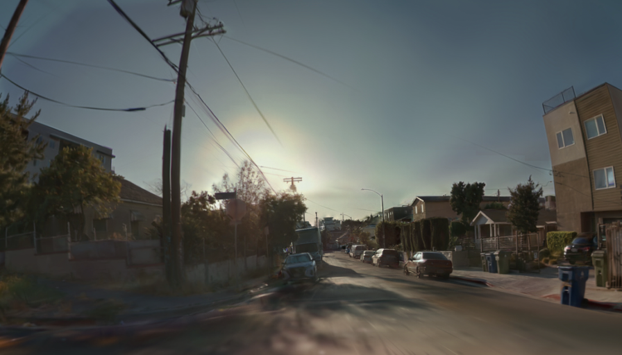

同一张 896 × 512 输入。RTX 5060。预热 5 次，正式计时 20 次。主指标为同步 wall 时间。
优化混合后端的同步 wall 均值：5.996 ms。原 WebGPU 耗时 ÷ 混合后端耗时：26.494。该比值只表示本次运行时间。数值容差检查单独报告。
PyTorch CUDA 使用 FP32 参考算术模拟 E4M3 与指定的 FP16 舍入。它不是原生 FP8 TensorCore 实现。native 路径使用 Vulkan 调度和 CUDA/PTX，不能称作纯 CUDA。Harmonizer 是不同模型，其时间只作参考。
| 实现 | 后端说明 | wall 均值 ms | 中位数 ms | p95 ms | wall FPS | CUDA Event 均值 ms | GPU timestamp 均值 ms | 运行状态 |
|---|---|---|---|---|---|---|---|---|
| OpenDLSS WebGPU | Edge WebGPU · 原 71 块网络 | 158.850 | 158.650 | 161.850 | 6.295 | — | 155.014 | 已完成 |
| OpenDLSS PyTorch CUDA | PyTorch CUDA · FP32 参考算术，模拟 E4M3 / FP16 舍入 | 203.081 | 201.895 | 211.377 | 4.924 | 201.200 | — | 已完成 |
| OpenDLSS native hybrid | Vulkan 调度 + CUDA/PTX · 混合后端 | 5.996 | 5.792 | 7.155 | 166.785 | — | 4.087 | 已完成 |
| Harmonizer + TAEW2.1 | PyTorch CUDA BF16 · 不同模型，仅供运行时间参考 | 167.782 | 167.778 | 171.709 | 5.960 | 163.963 | — | 已完成 |
计时范围为常驻 GPU 特征到网络 raw head。图像解码、预处理、模型加载、结果读回、合成和 PNG 保存均在主计时外。不同 GPU 计时方法单独列出。
PyTorch 首次特征准备含 helper 编译：66,299.351 ms。首次 graph 调用含编译：35,841.531 ms。两项均排除于稳态平均。
PyTorch 输出与 WebGPU 输出：PSNR 50.714 dB，8 位 MAE 0.446，最大通道差 9。结果不是 bit-exact。该差异不构成画质排名。
native：运行计时已完成。数值校验结果单独列示。 失败：与原 WebGPU 输出的 ±1 通道容差检查未通过。
native 对原 WebGPU：PSNR 50.352 dB；最大通道差 8；超出 ±1 的通道比例 4.253%。主基准采用同一 RGB 文件与 seed 0，各实现各自预处理。
{
"head_all_finite": true,
"head_shape_hwc": [
512,
896,
4
],
"head_min": -7.76953125,
"head_max": 1.0107421875,
"three_identical_production_heads": true,
"chaining_equals_barriers": true,
"webgpu_output_tolerance_passed": false,
"parity_cli_exit_code": 1,
"parity_reference_is_nvidia_capture": false,
"parity_log": "D:\\newDLSS\\joint-tests\\harmonizer-opendlss-2026-10-30\\cuda_inspect\\native_parity_features.log",
"identical_features_webgpu_cross_check": "D:\\newDLSS\\joint-tests\\harmonizer-opendlss-2026-10-30\\results\\webgpu_same_native_features\\results.json",
"preprocessing_bitwise_equal": true,
"same_features_head_bitwise_equal": false,
"same_features_head_comparison": {
"elements": 1835008,
"bitwise_mismatches": 1828799,
"mae": 0.0568633077560727,
"max_abs": 1.908203125,
"all_finite": true
},
"same_features_png_comparison": {
"reference_native_png": "D:\\newDLSS\\joint-tests\\harmonizer-opendlss-2026-10-30\\results\\native_ptx_896x512\\output.png",
"webgpu_same_features_png": "D:\\newDLSS\\joint-tests\\harmonizer-opendlss-2026-10-30\\results\\webgpu_same_native_features\\output.png",
"mae_uint8": 0.48143078031994047,
"rmse_uint8": 0.773258983126041,
"max_abs_uint8": 8.0,
"psnr_db": 50.36430412862686,
"channels_exceeding_one_code": 58168,
"fraction_exceeding_one_code": 0.04226539248511905,
"bitwise_equal": false
}
}
相同 16 通道特征的交叉检查：输入特征逐位一致。图内 raw head 输出仍不一致。差异位于预处理之后，具体算子未定位。
输入特征位差：0。4 通道 raw head 位差：1828799 / 1835008。合成 PNG 的 PSNR：50.364 dB，最大通道差：8。

原源码 SHA-256 检查：54 个文件，0 项差异。临时 metadata 仅调整 SHA-256 十六进制字母大小写。网络权重内容不变。
native 的 CPU 输出校验曾把 4 通道 proxy 当作 16 通道特征读取。独立 fixture 改为提供相同的 16 通道输入特征。原源码不作修改。诊断、计时 harness 与数值校验均链接在下方。
共同输入 SHA-256：7085d2d40f174c4295cc2ab9b032502379c07b1e5b433d5694f75c2f94b503b7
结构化数据：cuda_summary.json。生成时间 UTC：2026-10-30T09:06:54.556198+00:00。